Team cần review điều gì?
Không đánh giá UI đẹp hay không. Hãy xem user thao tác gì, hệ thống phản hồi thế nào và các UC có nhất quán không. Chỉ có hai tình huống pilot để xác nhận format review trước khi áp dụng cho đủ 8 UC.
UC-002 Source thiếu chi phí → hỏi lại → user bỏ phần chi phí → nhận deck. UC-004 B Pending → hỏi lại → Cancel hoặc Confirm → kết quả khác nhau.
Cả hai dùng chung fixture “Thư viện sẻ chia”. Nội dung và nút trong ảnh đều là mô phỏng hành vi. UI clarification là đề xuất, chưa chốt thiết kế.
Tình huống 1 — Source thiếu thông tin
Mục tiêu kiểm tra: Khi user đòi thông tin không có trong tài liệu, DeckAgent xử lý ra sao? Source gap không đồng nghĩa validation failure.
01 · User gửi yêu cầu
Tài liệu có 4 tuần / 40 người / 120 lượt mượn nhưng không có chi phí triển khai. User vẫn yêu cầu đưa chi phí vào deck.
Mở ảnh đầy đủ ↗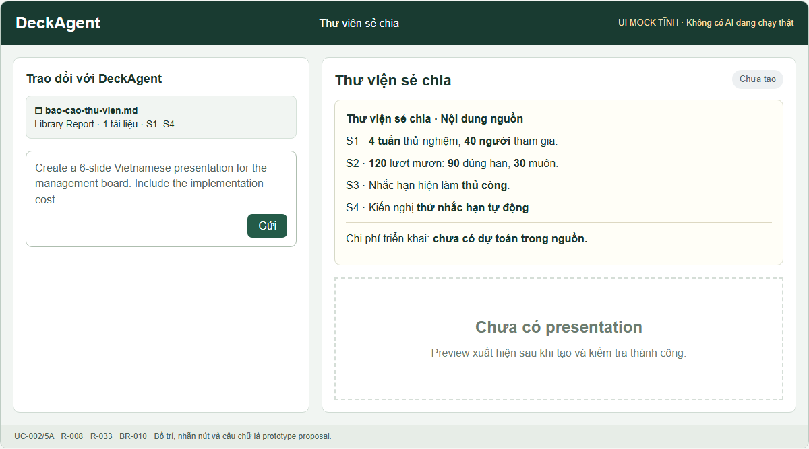
02 · DeckAgent phát hiện gap
Hệ thống nhận ra dữ liệu chi phí không xuất hiện trong nguồn, thay vì tự đưa ra con số.
Mở ảnh đầy đủ ↗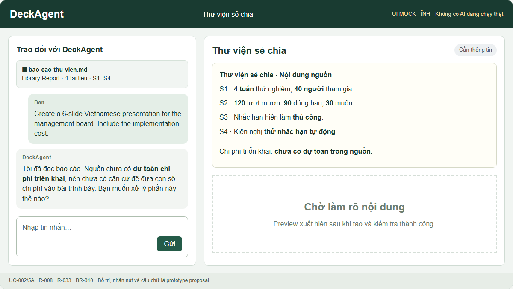
03 · DeckAgent hỏi lại
Ba lựa chọn là mock UX: cung cấp thêm, bỏ mục chi phí, hoặc cho phép nội dung AI bổ sung. Chưa coi đây là UI bắt buộc.
Mở ảnh đầy đủ ↗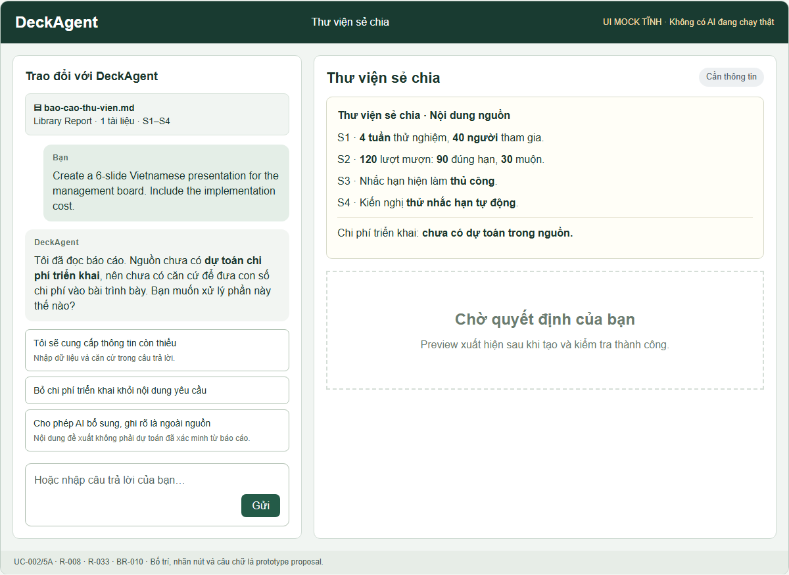
04 · User quyết định bỏ chi phí
Yêu cầu được cập nhật trước khi generation.
Mở ảnh đầy đủ ↗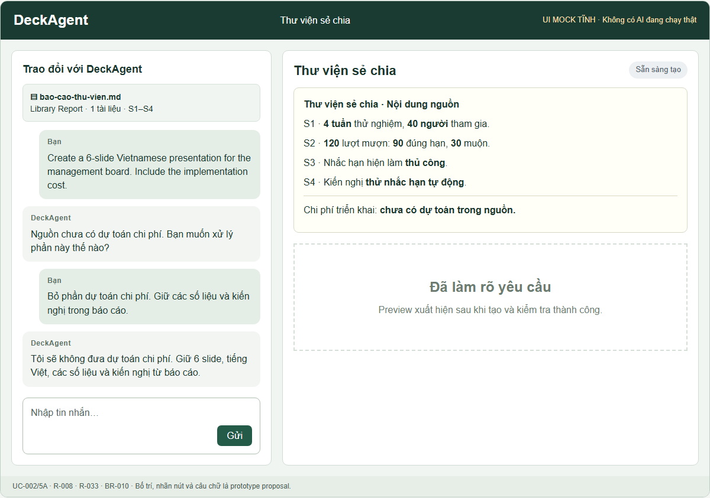
05 · Có deck hợp lệ
Sau generation và validation thành công, deck đầu tiên trở thành Accepted; số liệu nguồn được giữ, không có con số chi phí tự tạo.
Mở ảnh đầy đủ ↗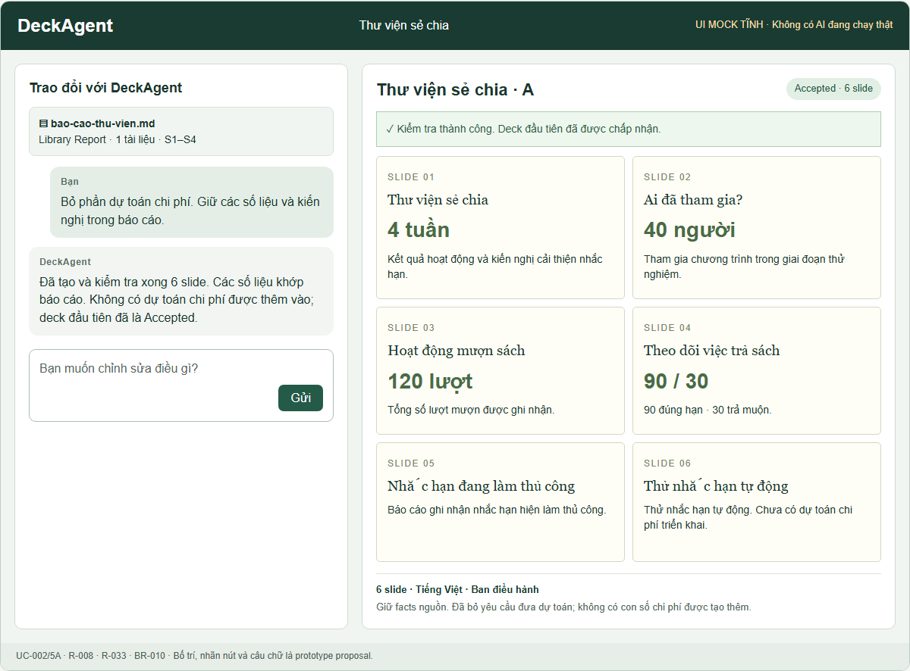
Xem thêm: progress mô phỏng
Generation sau quyết định
Chỉ mô phỏng trạng thái đang xử lý, không khẳng định pipeline/tiến độ thực tế.
Mở ảnh đầy đủ ↗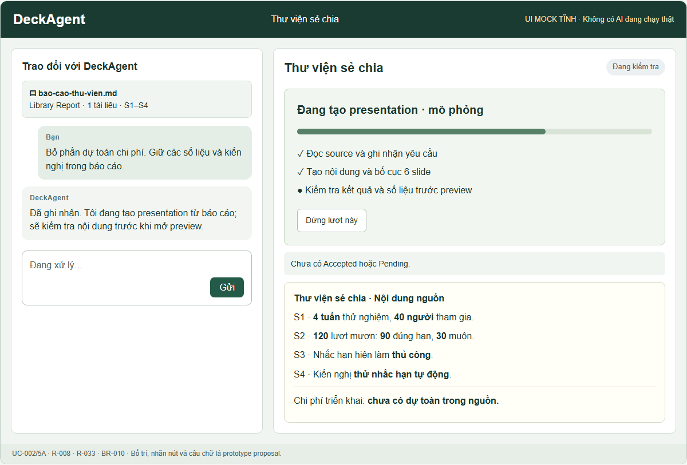
Tình huống 2 — Hủy hay tiếp tục chỉnh sửa khi B đang Pending?
Mục tiêu kiểm tra: Phân biệt Cancel của clarification với Discard Pending Revision; xác định đúng thời điểm B trở thành Accepted khi refine tiếp.
01 · B đang Pending
A là Accepted 6 slide, B là Pending 4 slide. User đang preview B.
Mở ảnh đầy đủ ↗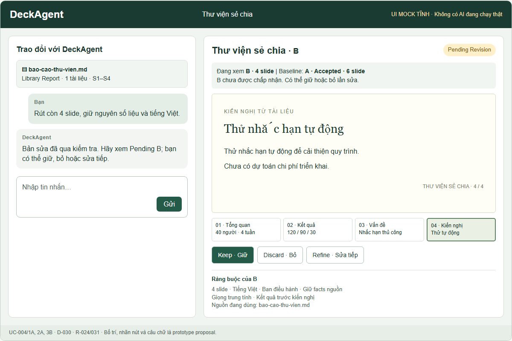
02 · Gửi yêu cầu refine mới
User đưa yêu cầu chưa đủ cụ thể khi B vẫn Pending.
Mở ảnh đầy đủ ↗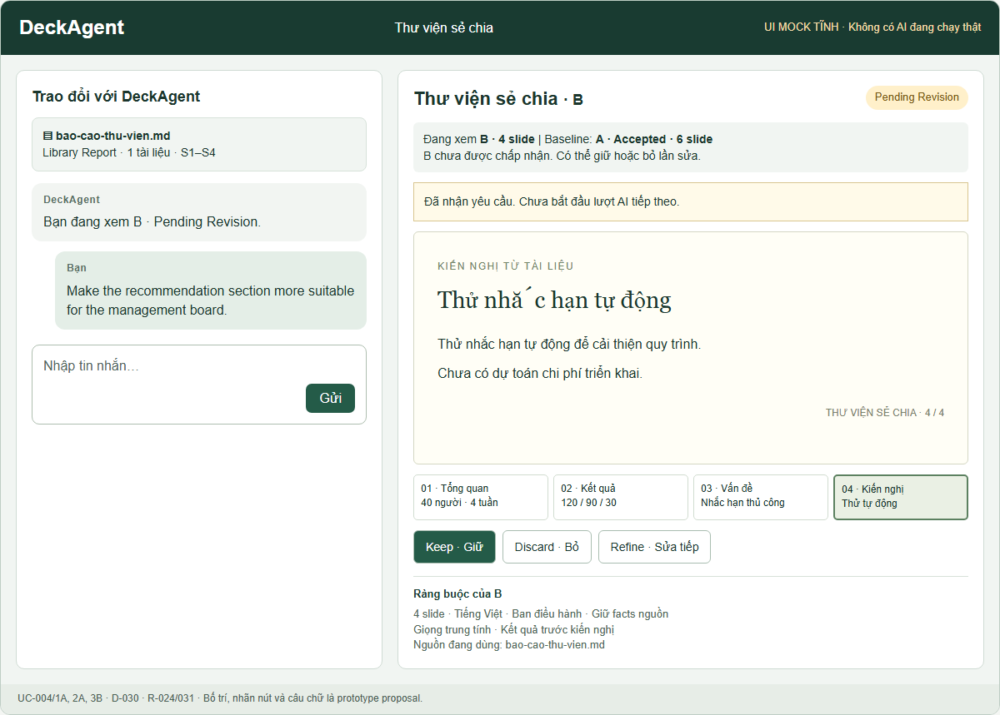
03 · Hệ thống hỏi clarification
Ở thời điểm này chưa bắt đầu AI operation mới; A vẫn Accepted và B vẫn Pending.
Mở ảnh đầy đủ ↗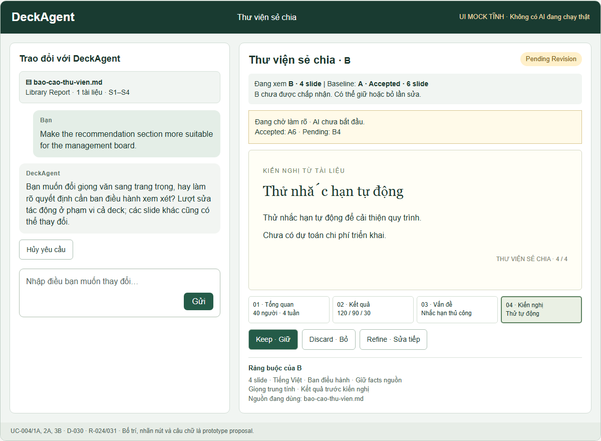
Nhánh A · User chọn Cancel
Hủy yêu cầu mới không đồng nghĩa Keep B hoặc Discard B. Kết quả: A Accepted + B Pending vẫn giữ nguyên.
Mở ảnh đầy đủ ↗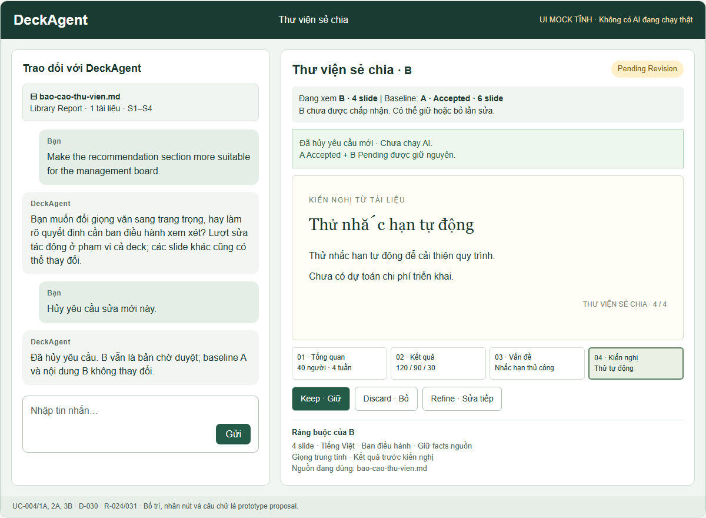
Nhánh B — Confirm → B Accepted → operation mới thất bại (bấm để xem)
Đây là nhánh thay thế, không phải các bước nối sau Cancel.
B1 · User làm rõ / xác nhận
Cần có ý chí commit sang lượt refinement tiếp theo; B chưa accept chỉ vì nhập câu lệnh mơ hồ.
Mở ảnh đầy đủ ↗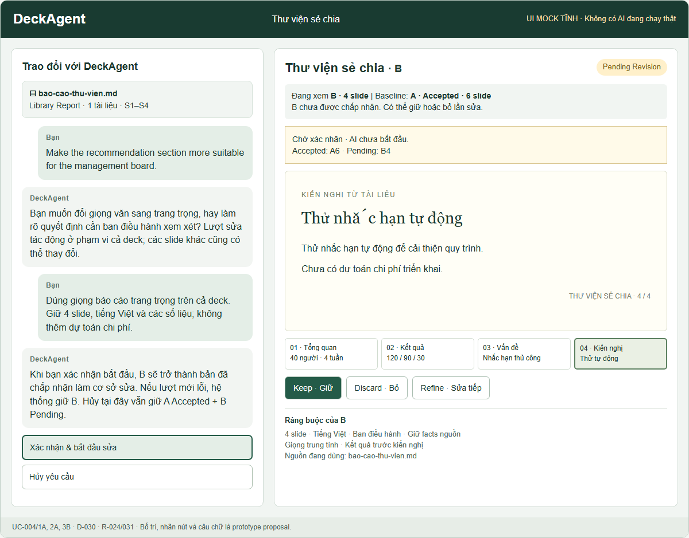
B2 · Operation mới bắt đầu
Tại commit operation: B chuyển thành Accepted baseline và quá trình tạo C bắt đầu.
Mở ảnh đầy đủ ↗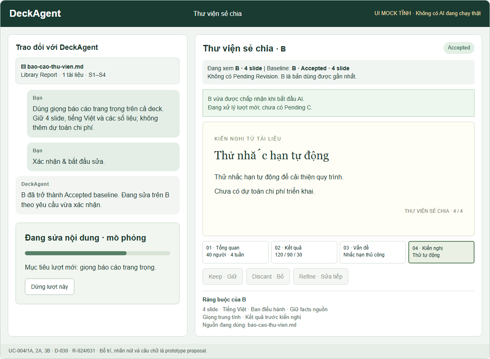
B3 · Lỗi khi tạo C
Operation thất bại; B đã Accepted được giữ lại, không tạo Pending C.
Mở ảnh đầy đủ ↗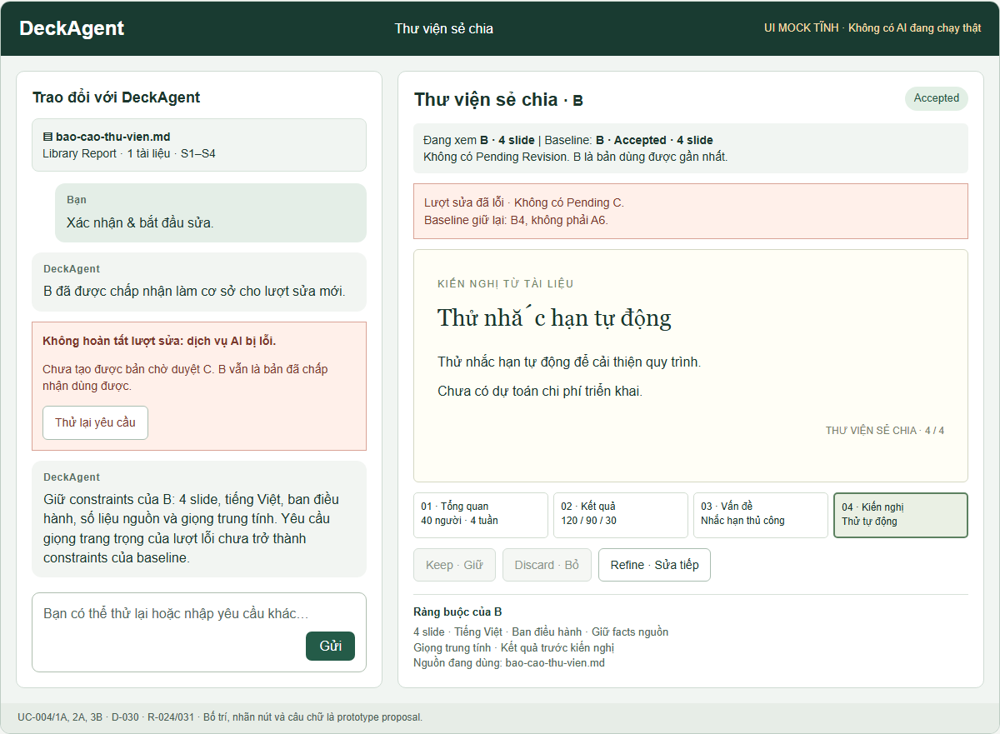
Chỉ mở khi cần: Evidence và nhánh hỗ trợ
Hai sản phẩm bên dưới không xác nhận lifecycle của DeckAgent. Chúng chỉ minh họa một pattern khác: cho user xem/chỉnh outline trước generation. Không suy ra DeckAgent bắt buộc có outline approval.
Evidence Gamma — outline review (user-captured)
Gamma · Review plan
Ảnh user cung cấp; chỉ dùng để đối chiếu bước xác nhận/trao đổi kế hoạch trước khi tạo.
Mở ảnh đầy đủ ↗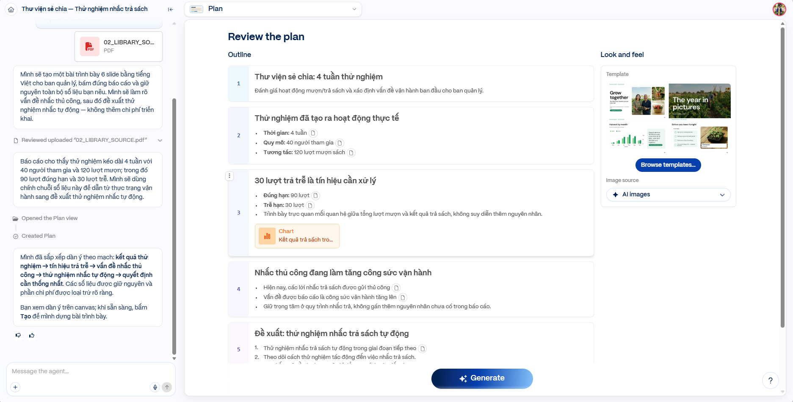
Evidence Napkin — outline (user-captured)
Napkin Slides · Outline
Ảnh user cung cấp; cho thấy tương tác chỉnh outline, không đồng nhất với validation của DeckAgent.
Mở ảnh đầy đủ ↗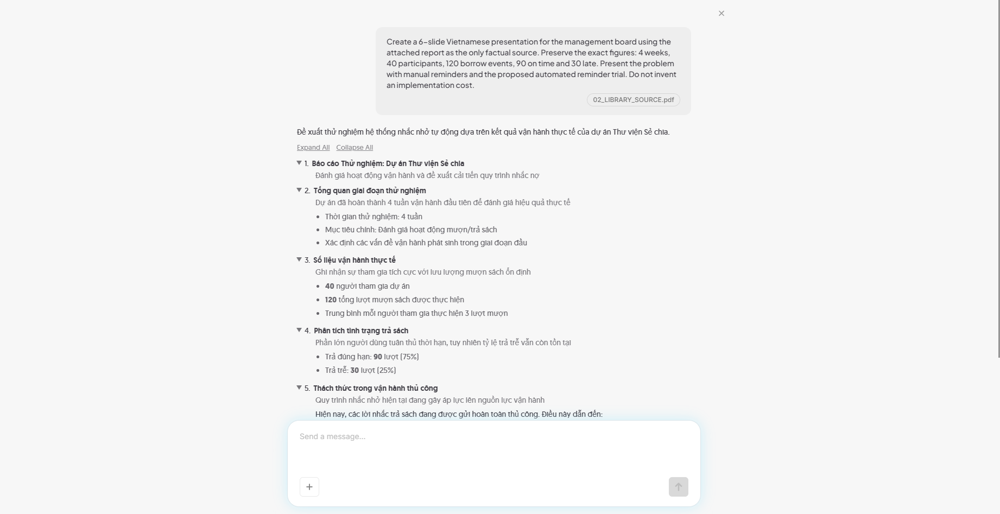
UC-002 — Error / Retry (tài liệu hỗ trợ, chưa phải demo chính)
UC-002 · Các nhánh lỗi
Hình ghép cũ: chưa dùng như walkthrough chính; mở khi cần review acceptance criterion lỗi và recovery.
Mở ảnh đầy đủ ↗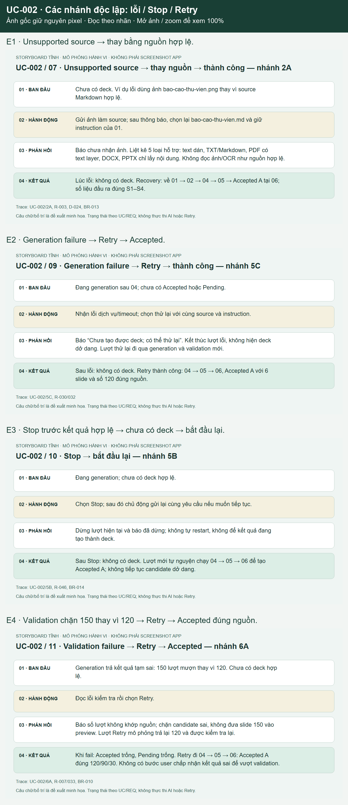
UC-013 — Discard (minh họa cross-UC)
UC-013 · Discard B
Thao tác này khác Cancel request mới: Discard bỏ B Pending và khôi phục A cùng constraints.
Mở ảnh đầy đủ ↗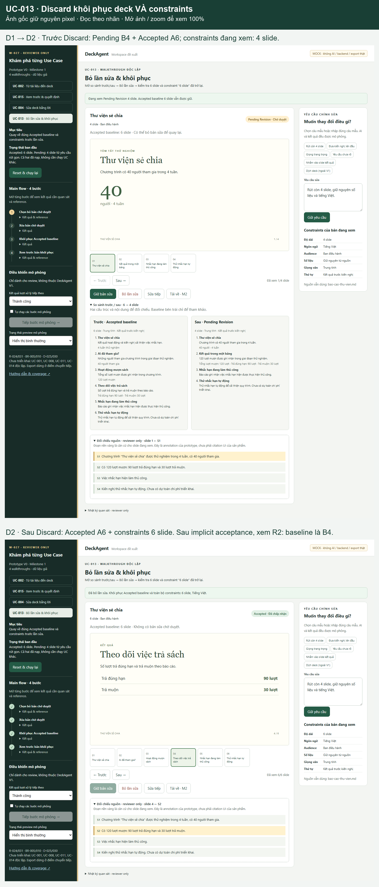